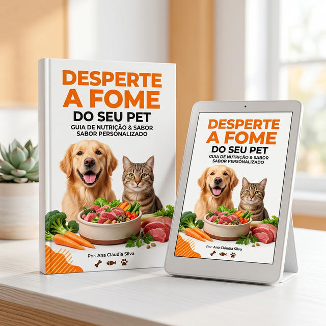

Desperte a Fome
do Seu Pet
O Guia Definitivo para Alimentação Saudável e Natural!
Seu pet ignora a comida? Descubra o método testado para devolver a alegria das refeições em poucos dias.

Você já se sentiu angustiado ao ver seu pet ignorando a comida?
A falta de apetite pode ser mais do que um simples capricho; é um sinal que não deve ser ignorado. A preocupação com a saúde do seu amigo de quatro patas pode ser devastadora, e a insegurança sobre como agir pode te deixar paralisado.
Preocupação com a Saúde
O que a falta de apetite pode estar escondendo do seu amigo peludo?
Insegurança Constante
Devo levar meu pet ao veterinário agora ou isso vai passar logo?
Frustração Acumulada
Já tentou várias opções de alimentos e petiscos sem nenhum sucesso?
Sentimento de Culpa
Será que eu fiz algo de errado ou falhei na alimentação dele?
Estresse Financeiro
A possibilidade de consultas veterinárias repetitivas pode se tornar uma carga pesada e inesperada.
Se você respondeu "sim" a alguma dessas perguntas, saiba que isso não é culpa sua.
A verdade é que muitos tutores enfrentam esses desafios diariamente com métodos ultrapassados que não consideram os instintos naturais do pet. O que você deseja, acima de tudo, é ver seu pet saudável e feliz. E essa jornada começa com a abordagem certa.

Apresentamos o
"Despertar a Fome do Pet"
Um guia prático que vai mudar a maneira como você alimenta seu amigo peludo para sempre.
Este eBook foi desenvolvido para proporcionar soluções rápidas, eficazes e naturais, ajudando a estimular o apetite do seu pet e garantindo que ele volte a ser saudável, forte e ativo.
- Abordagem 100% natural e segura
- Fácil aplicação no dia a dia
- Adequado para cães e felinos
O que você vai encontrar neste guia
Tudo que você precisa em um método simples em passo a passo.
Métodos Comprovados
Técnicas testadas para despertar a fome do seu pet e restabelecer o instinto alimentar rapidamente.
Receitas Caseiras
Refeições deliciosas, naturais e saudáveis que o seu pet não vai conseguir resistir.
Dicas Práticas
Estratégias diárias e fáceis de aplicar para aumentar o interesse e ansiedade do pet pela comida.
Por que você não pode perder este guia?
Conexão Emocional
Reforce o vínculo entre você e seu pet durante as refeições, transformando a alimentação em um momento de alegria.
Tranquilidade Total
Tenha a certeza de que está fazendo o melhor e o mais seguro pelo seu amigo de quatro patas.
Resultados Rápidos
Dicas práticas e metodologias simples que você pode aplicar imediatamente e ver mudanças logo nos primeiros dias.
A transformação está acontecendo
Veja o que donos de pets estão dizendo após aplicar o método.
“O meu cachorro voltou a comer normalmente e com muita empolgação depois das dicas desse guia! Foi um alívio enorme aqui em casa.”
Marcos Silva
Tutor do Max (Cachorro)“Sempre sofri com minha gatinha exigente. Essas receitas fizeram ela se interessar novamente pela comida. Recomendo muito!”
Camila Alves
Tutora da Luna (Gato)“Meu Bulldog estava magro e desanimado. Tentei de tudo antes do guia. Hoje ele come todo o pote e até pede mais. Mudou nossas vidas.”
Roberto Mendes
Tutor do Thor (Cachorro)“Excelente abordagem natural! Sou apaixonada pelos meus dois gatos e ver eles saudáveis de novo não tem preço. As dicas do dia a dia são fantásticas.”
Juliana Castro
Tutora da Misha (Gato)“Comprei sem muita expectativa, mas os resultados começaram em 3 dias. As receitas caseiras são práticas e os cães amam. O melhor investimento para a saúde deles!”
André Costa
Tutor do Bob e da BelaTransforme a Alimentação do Seu Pet e
Acabe com a Angústia!
Você não está sozinho! Assuma o controle hoje e recupere a alegria do seu melhor amigo nas refeições com soluções práticas e 100% naturais.
- Tranquilidade Total: Saiba exatamente como agir de forma segura e sem medo.
- Resultados Rápidos: Receitas e dicas que estimulam o instinto e abrem o apetite.
- Conexão Emocional: Fim da frustração e culpa; transforme refeições em momentos felizes.
- Economia Real: Evite gastos frequentes e consultas desnecessárias no veterinário.
R$ 37,90 ou 4x de R$ 9,83 no cartão
Risco Zero! Garantia de 7 Dias
Você tem 7 dias de garantia incondicional. Caso você aplique as dicas e seu pet não apresente melhora no apetite, ou não fique satisfeito com o conteúdo por qualquer motivo, poderá solicitar o reembolso total dentro desse prazo. Sem letras miúdas ou complicações. O risco é todo nosso!
Como funciona o acesso ao seu eBook?
Compra realizada
Após a confirmação do pagamento, seu acesso é liberado automaticamente.
Acesso à plataforma
Você receberá os dados por e-mail para acessar a área de membros da Cakto.
Baixe seu eBook
Dentro da plataforma, você poderá baixar o eBook em PDF no seu dispositivo.
Comece a aplicar
Siga as orientações e transforme a alimentação do seu pet.
Perguntas Frequentes
Sim! O guia aborda princípios universais de apetite animal e contém dicas e receitas adaptáveis tanto para cães quanto para felinos.
Por se tratar de um eBook (livro digital), você receberá o acesso imediatamente no seu e-mail logo após a confirmação do pagamento. Pode ler no celular, tablet ou computador.
Não. As receitas são formuladas com ingredientes naturais, comuns e acessíveis, visando a praticidade no dia a dia da família.